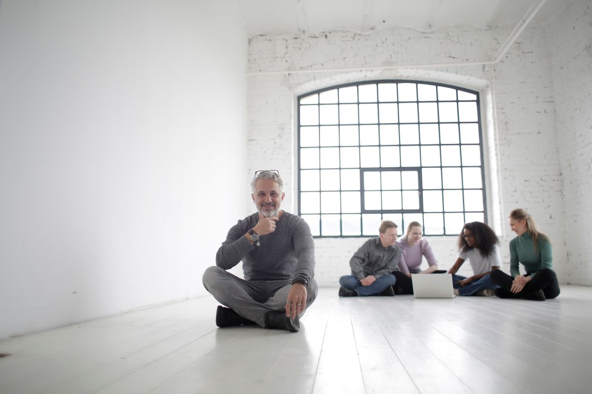
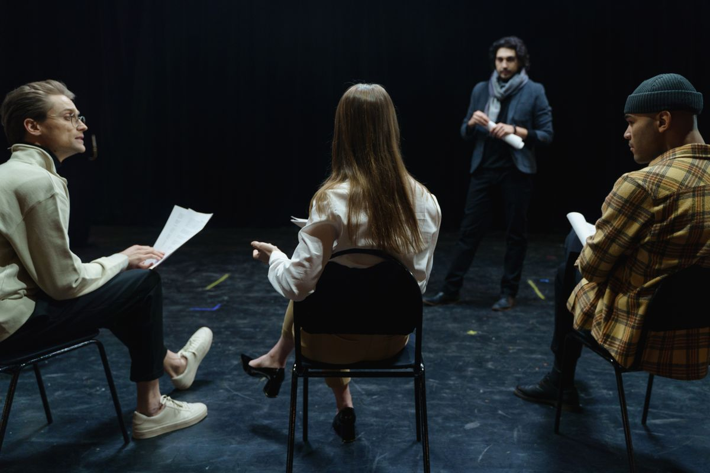
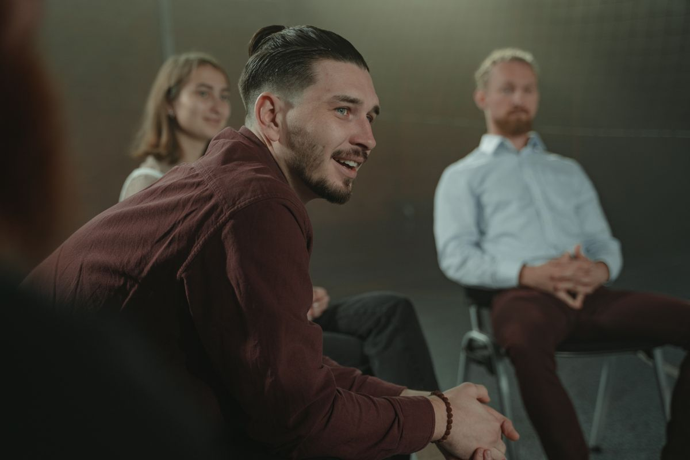
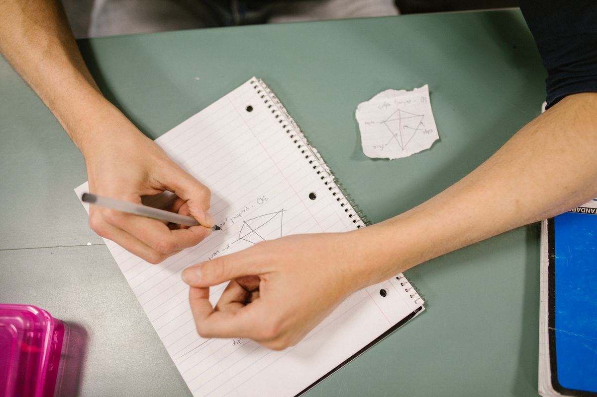

El vínculo
Nadie se explica solo. Lo que te pasa con tu familia, con tu jefe o con tu grupo de amigos tiene una estructura, y esa estructura se puede leer.
vínculo · comunicación · aprendizaje
CEAS es un centro de aprendizaje social. Formamos en Psicología Social desde donde se aprende de verdad: en grupo, con la teoría puesta a trabajar sobre lo que a cada uno le pasa.
la ronda · donde empieza todo
“El sujeto es un ser de necesidades que sólo se satisfacen socialmente, en relaciones que lo determinan.”
Enrique Pichon-Rivière · fundador de la Psicología Social argentina
Nadie se explica solo. Lo que te pasa con tu familia, con tu jefe o con tu grupo de amigos tiene una estructura, y esa estructura se puede leer.
El grupo no es una suma de personas: es un espacio donde aparecen roles, tareas, resistencias y emergentes. Ahí se aprende a intervenir.
Toda situación nueva genera miedo a perder y miedo a atacar. Trabajar esos miedos es lo que abre el aprendizaje y la adaptación activa a la realidad.
— el marco —
Trabajamos con el Esquema Conceptual, Referencial y Operativo: un conjunto de ideas que no se estudia para repetir, sino para usar. Conceptual porque ordena, referencial porque se apoya en un campo concreto, y operativo porque sirve para hacer algo con eso.

Un recorrido que va del sujeto al grupo, y del grupo a la comunidad. Cada año suma teoría, pero sobre todo suma horas de estar adentro de un grupo trabajando.
Qué es la psicología social, la noción de vínculo, necesidad y objeto, los miedos básicos, la teoría del rol. Empezás a mirarte adentro de tus propios grupos.
El grupo operativo por dentro: tarea, encuadre, emergente y los vectores del cono invertido. Cómo se atraviesan las instituciones en las que trabajamos y vivimos.
Práctica supervisada en terreno: coordinación de grupos, talleres y proyectos comunitarios. Se cierra con un trabajo final integrador sobre la experiencia hecha.
Al terminar el recorrido salís con herramientas concretas para coordinar grupos, armar talleres y sostener espacios de trabajo con gente. Los detalles de plan, días y aranceles te los pasamos por WhatsApp, que es donde mejor se conversan.
— cómo se cursa —
Nos sentamos en círculo. Nadie está atrás ni adelante: la disposición ya dice algo sobre cómo se produce el conocimiento acá.
Cada grupo tiene quien coordina la tarea y quien registra lo que pasa. Ese registro se devuelve y se piensa: es material de trabajo, no un control.
La bibliografía no se toma de memoria. Se lee, se discute y se prueba contra lo que está pasando en el propio grupo esa misma noche.
Se sale. Escuelas, centros de salud, clubes, organizaciones barriales: el campo es donde la teoría se vuelve operativa o se cae.



— herramienta abierta —
Es el instrumento con el que un psicólogo social evalúa cómo funciona un grupo. Pensá en uno real —tu equipo de trabajo, tu familia, tu comisión— y marcá cómo anda en cada vector. Abajo se arma la lectura.
Cada vector es una manera de mirar lo mismo: si el grupo puede trabajar junto o si algo lo traba. No hay respuesta correcta — hay lectura.
Esto es una versión simplificada y didáctica de la herramienta. En la formación se trabaja completa.
No hace falta ser psicólogo ni venir de la salud. Hace falta trabajar con gente —o querer entender por qué con la gente pasa lo que pasa.
¿Es para mí? Preguntanos— además de la carrera —
Actividades de una o pocas jornadas, abiertas a la comunidad. Son la mejor forma de conocer cómo trabajamos antes de meterte en la formación completa.
Una experiencia de grupo de principio a fin, con coordinación y devolución. Salís habiendo vivido lo que después se estudia.
Para parejas, familias y equipos: qué se dice, qué se escucha y qué queda dando vueltas sin decirse.
Una película, un café y una lectura grupal. Entrada abierta, sin conocimientos previos.
Encuentros de un día sobre temas puntuales: conflicto, duelo, liderazgo, adolescencia, trabajo en equipo.
El calendario de talleres lo publicamos en Instagram y lo pasamos por WhatsApp. Escribinos y te avisamos del próximo.
No. La formación en Psicología Social está pensada para adultos de cualquier recorrido. Lo único que pedimos es secundario completo y ganas de trabajar en grupo.
No. La Psicología clínica mira sobre todo al individuo; la Psicología Social mira lo que pasa entre las personas: vínculos, grupos, instituciones y comunidad. Son campos distintos y se complementan bien.
El recorrido completo está organizado en tres años, con un encuentro semanal. Las fechas exactas de inicio, el día y el horario del próximo grupo te los pasamos por WhatsApp.
Los aranceles los conversamos por WhatsApp, porque cambian según el grupo y la modalidad. Preferimos decírtelo con el detalle completo antes que publicar un número suelto.
La mayoría de quienes cursan trabajan. Por eso los encuentros son semanales y fuera del horario laboral. La lectura se sostiene, pero está pensada para gente con la vida ocupada.
Coordinar grupos y talleres, trabajar en prevención y promoción comunitaria, sumar una herramienta grupal a lo que ya hacés (docencia, salud, RRHH, territorio) y, sobre todo, pararte distinto frente a los grupos que ya integrás.
Contanos de dónde venís y qué estás buscando. Te respondemos nosotros, no un bot.